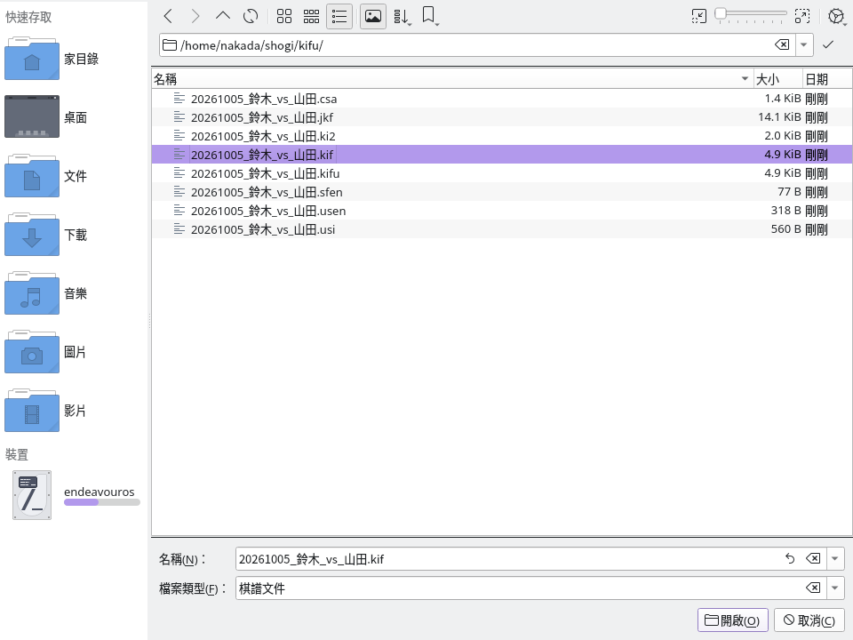
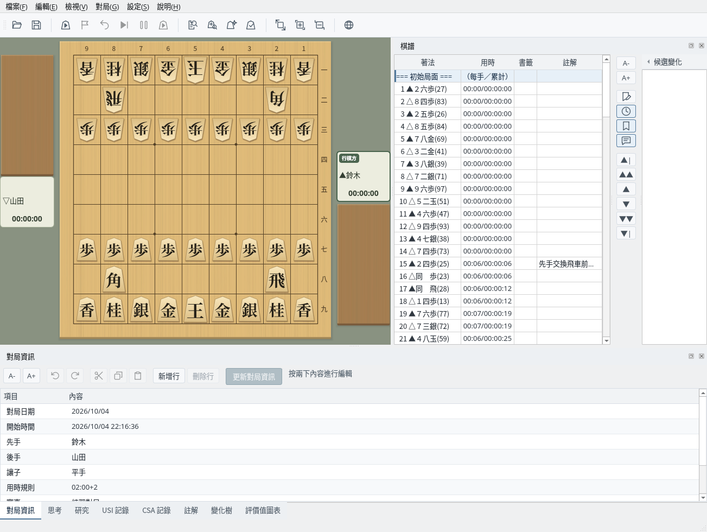
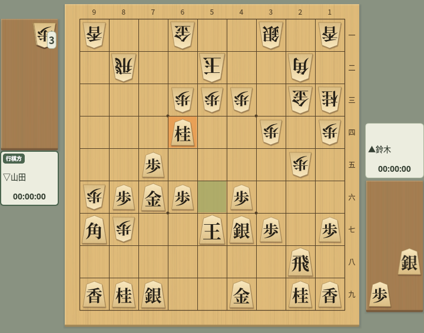
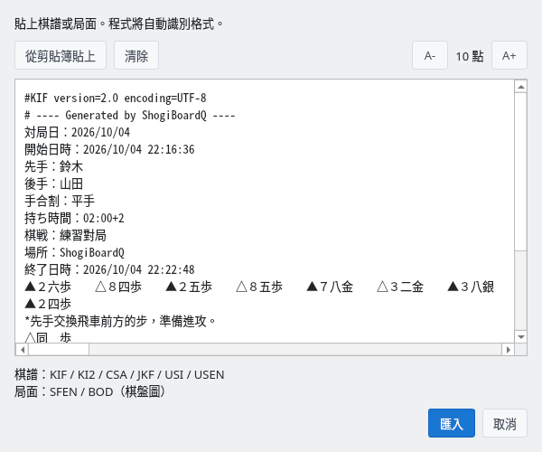

以多種格式讀取、儲存與複製棋譜
截圖於 Linux 上以繁體中文介面擷取。
支援主要的棋譜格式，也能讀取含變化的棋譜
可以讀取以下棋譜格式。
| 格式 | 副檔名 | 說明 |
|---|---|---|
| KIF | .kif .kifu | Kifu for Windows 的標準格式，記錄手數、著法與用時 |
| KI2 | .ki2 .ki2u | KIF 的簡化格式，將著法橫向排列記錄 |
| CSA | .csa | 日本電腦將棋協會（CSA）的標準格式，以座標記錄 |
| JKF | .jkf .json | JSON 棋譜格式，以 JSON 結構表示變化（.json 檔案以及無法從副檔名判斷的檔案，會依內容判斷格式） |
| USI / SFEN | .usi .sfen | USI 著法序列，或僅包含局面的 SFEN |
| USEN | .usen | USEN 壓縮格式，精簡地編碼棋譜 |
從選單「檔案」→「開啟…」開啟檔案選擇對話方塊（開啟棋譜檔案）。可以在「檔案類型」中篩選要顯示的格式。

檔案選擇對話方塊：可選擇 KIF、KI2、CSA、JKF、USI、SFEN、USEN 格式的檔案
讀取檔案後，「棋譜」欄會顯示著法與用時，棋盤則顯示初始局面。可以透過棋譜欄或導覽按鈕移動到任意局面。對局者、日期、讓子等對局資訊也會自動讀取。

讀取棋譜後：棋譜欄顯示著法與用時
以下是從平手開始走了「７六歩・３四歩・２六歩」、尚未終局的 3 手棋譜（範例中的日文為各格式規定的記法）。不同格式能記錄的資訊（對局者、用時等）各不相同。
手合割：平手
先手：鈴木
後手：山田
手数----指手---------消費時間--
1 ７六歩(77) ( 0:02/00:00:02)
2 ３四歩(33) ( 0:02/00:00:02)
3 ２六歩(27) ( 0:02/00:00:04)先手：鈴木
後手：山田
▲７六歩 △３四歩 ▲２六歩'CSA encoding=UTF-8
V3.0
N+鈴木
N-山田
PI
+
+7776FU
T2
-3334FU
T2
+2726FU
T2{
"header": {
"先手": "鈴木",
"後手": "山田"
},
"moves": [
{},
{"move":{"from":{"x":7,"y":7},
"to":{"x":7,"y":6},
"color":0,"piece":"FU"}},
{"move":{"from":{"x":3,"y":3},
"to":{"x":3,"y":4},
"color":1,"piece":"FU"}},
{"move":{"from":{"x":2,"y":7},
"to":{"x":2,"y":6},
"color":0,"piece":"FU"}}
]
}position startpos moves 7g7f 3c3d 2g2f~0.7ku2jm6y2.可以用 6 種格式儲存棋譜
從選單「檔案」→「另存為…」可以將棋譜以任意格式儲存為檔案。省略副檔名時，會加上儲存對話方塊中所選篩選器的副檔名；輸入副檔名時，由該副檔名決定儲存格式。
| 格式 | 副檔名 | 字元編碼 |
|---|---|---|
| KIF 格式 | .kif / .kifu | Shift_JIS / UTF-8 |
| KI2 格式 | .ki2 / .ki2u | Shift_JIS / UTF-8 |
| CSA 格式 | .csa | UTF-8 |
| JKF 格式 | .jkf | UTF-8 |
| USEN 格式 | .usen | UTF-8 |
| USI 格式 | .usi | UTF-8 |
KIF、KI2、JKF、USEN 可以儲存變化。CSA、USI 只儲存本譜，KI2 不儲存用時。USI、USEN 不儲存對局者、註解與用時，USEN 能表示的終局結果也有限制。將 CSA 以毫秒為單位的用時轉換為 KIF、JKF 時，不足 1 秒的部分會捨去。以 USEN 格式儲存含有用時的棋譜時，會顯示確認，說明哪些資訊不會被儲存。以 CSA、USI 格式複製含有變化的棋譜時，狀態列會顯示僅複製了本譜。
儲存為 .kif、.ki2（Shift_JIS）時，如果對局者或註解中含有 Shift_JIS 無法表示的字元（部分簡體字、繁體字或表情符號等），會顯示這些字元並詢問是否「以 UTF-8 儲存」。以 UTF-8 儲存時，檔案第一行會記錄「encoding=UTF-8」。若要一律以 UTF-8 儲存，請選擇 .kifu、.ki2u。
讓子對局的棋譜與柿木格式的 KIF 一樣，將對局者寫為「下手」「上手」。KIF、KI2 中局面圖的持駒和行棋方（「上手の持駒：」「下手の持駒：」「上手番」）以及終局行（「まで30手で上手の勝ち」）也使用下手、上手。CSA 格式中，下手的名字寫在「N+」行，上手的名字寫在「N-」行。如果對局資訊中的對局者是「先手」「後手」（例如用其他軟體製作的棋譜），局面圖和終局行也保持先手、後手，同一份棋譜中不會混用兩種稱呼。兩種寫法的棋譜都可以讀取。
CSA 檔案中有以「/」分隔的多個棋譜時，只會讀取第一個棋譜。
USI 格式棋譜末尾的終局代碼是用於儲存棋譜的擴充，不屬於與引擎通訊用的 USI「position」指令規格。
各格式的資料（日文或英文）：KIF 規格、棋譜記法（KI2 的著法記法）、CSA V3.0 規格、JKF 規格、USI・SFEN 規格、USEN 資料。
選單「檔案」→「儲存」會依副檔名對應的格式，覆寫最近讀取或儲存的檔案。尚未設定儲存位置、從貼上或局面集匯入、或讀取了 .sfen 檔案時，會開啟「另存為…」。對局結束後的自動儲存位置可以在對局對話方塊中指定。
棋譜有未儲存的修改時，在讀取其他棋譜、以新棋譜開始對局、重設為初始畫面或結束程式時，會確認是否儲存。選擇「取消」，或儲存被中止、失敗時，該操作也會中止。
可以將棋譜、局面、棋盤圖片複製到剪貼簿，也可以貼上棋譜
從選單「編輯」→「複製棋譜」可以將目前的棋譜以各種格式複製到剪貼簿，並貼到其他程式中使用。
| 選單項目 | 內容 |
|---|---|
| KIF 格式 | 以 KIF 格式複製整個棋譜 |
| KI2 格式 | 以 KI2 格式複製整個棋譜 |
| CSA 格式 | 以 CSA 格式複製整個棋譜 |
| USI 格式（截至目前著法） | 以 USI 格式複製到目前顯示的著法為止 |
| USI 格式（全部） | 以 USI 格式複製整個棋譜 |
| JSON 棋譜格式 | 以 JKF（JSON）格式複製整個棋譜 |
| USEN | 以 USEN 壓縮格式複製整個棋譜 |
從選單「編輯」→「複製局面」可以將目前的局面複製到剪貼簿。
| 選單項目 | 內容 |
|---|---|
| SFEN 格式 | 以 SFEN 字串複製目前的局面 |
| BOD 格式 | 以文字棋盤圖（BOD）複製目前的局面。讓子對局的棋譜與儲存的棋譜一樣，持駒和行棋方使用下手、上手 |
選單「編輯」→「複製棋盤圖片」會將目前的棋盤以圖片複製到剪貼簿，方便貼到部落格或解說文章中。

複製棋盤圖片：將棋盤以圖片複製到剪貼簿
選單「編輯」→「貼上棋譜…」會開啟貼上棋譜的對話方塊。在文字框中貼上棋譜，或點選「從剪貼簿貼上」，再點選「匯入」，程式會自動識別格式並讀取。

貼上棋譜對話方塊：自動識別 KIF、KI2、CSA、USI、JKF、USEN、SFEN、BOD 格式
| 格式 | 自動識別的依據 |
|---|---|
| KIF | 包含「手数----」，或有以手數與目標位置開頭的行。僅有「手数」「指し手」等詞不會判定為 KIF |
| KI2 | 以 ▲、△、▽、☗、☖ 開頭並接著目標位置的著法 |
| CSA | V2/V3 版本行或註解行、PI/P 局面資料、對局者或對局資訊，或以 + 或 - 開頭並接著數字的著法行 |
| USI | 以 position、startpos、sfen 開頭的行，或 SFEN 局面後接著法。也接受 startpos moves ... |
| JKF | 以 { 或 [ 開頭的 JSON 會依 JKF 檢查。匯入時需要 JKF 物件，僅有 JSON 陣列會被拒絕 |
| USEN | 符合以 ~ 分隔的手數與編碼序列的 USEN 結構。註解或 URL 中的 ~ 不足以判定 |
| SFEN | 由棋盤、行棋方、持駒、手數 4 個欄位組成的局面字串。帶有 sfen 等前綴時會識別為 USI |
| BOD | 帶有持駒標題、邊框或格子記法，且沒有著法列表的局面圖 |
無法識別的文字會嘗試以 KIF 讀取。識別格式後會檢查內容，無法匯入時會顯示錯誤。